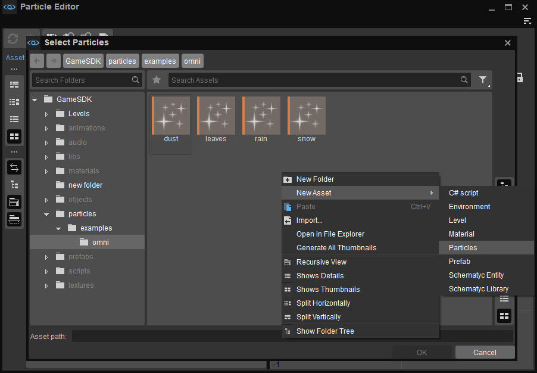
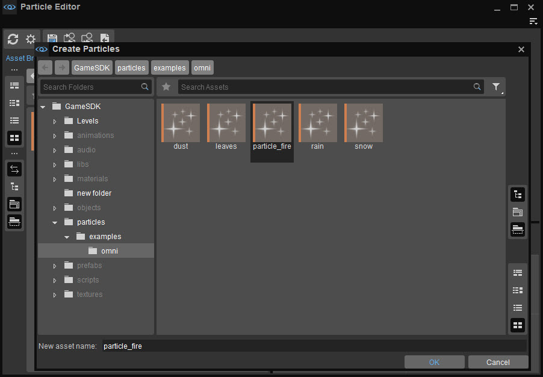
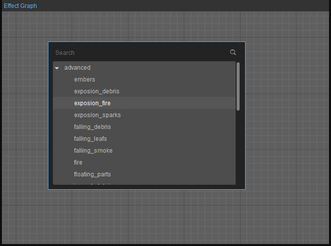
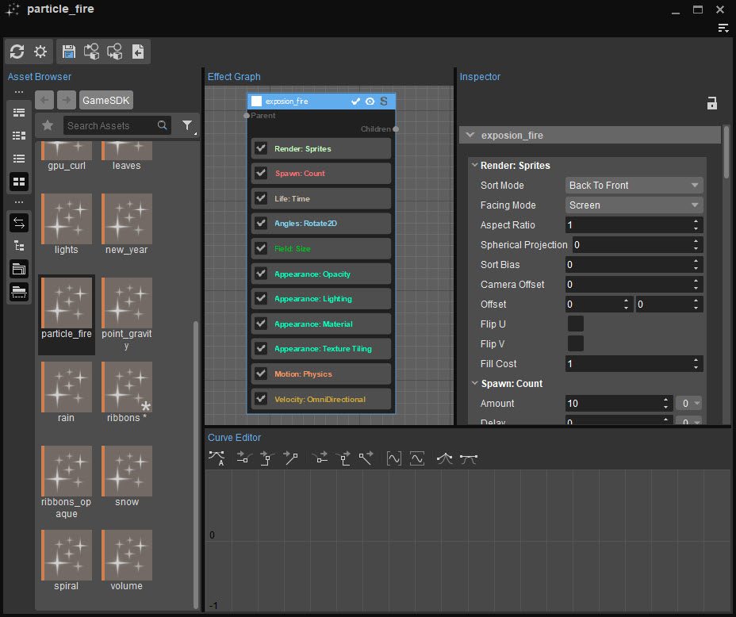
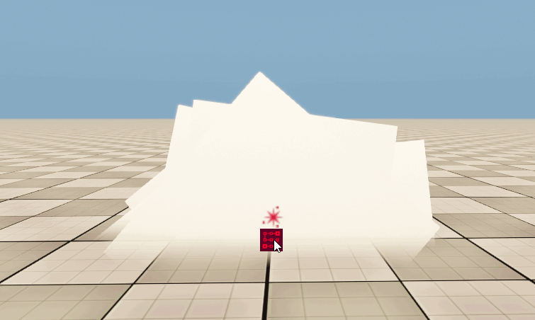

Создание эффекта частиц
Эффект частиц можно легко создать и использовать на уровне, просто выполнив следующие действия:
Чтобы создать новый эффект частиц, нажмите Файл→ Новый на панели Particle Editor и задайте имя для частицы.
Пользователи также могут создавать эффекты частиц, просто щелкнув правой кнопкой мыши пустое место и выбрав Новое→ Частицы на панели «Создать частицу» в Обозревателе ресурсов.
В этом примере новая частица называется пarticle_fire.
После создания нового эффекта частиц следуйте инструкциям Файл→Открыть путь и выберите эффект (стр.article_fire), затем нажмите OK для доступа к его компонентам и функциям:

Новые эффекты частиц появляются вместе с базовым компонентом, который мы можем отобразить в редакторе графиков. Пользователи могут работать с этим компонентом по умолчанию или выбрать готовый компонент, чтобы начать изменять эффект. Доступ к предустановленным компонентам можно получить, щелкнув правой кнопкой мыши пустое место в Графике эффектов, чтобы открыть библиотеки предустановок. Дополнительную информацию о библиотеке предустановок см. Библиотека пресетов частиц.
В этом примере explosion_fire под Расширенный используется раздел, а компонент по умолчанию удаляется с панели «График эффектов»:

После explosion_fire компонент добавлен к эффекту частиц, нажмите кнопку Сохранить кнопку и перетащите объект частицы из Обозреватель активов на свой уровень. Визуальный результат эффекта полностью зависит от типа компонентов и изменений, внесенных в список свойств объекта.
В этом примере explosion_fire Эффект частиц излучает базовое белое облако:
Как только эффект частиц будет добавлен на уровень, его свойства можно будет изменить на Particle Editor для создания более сложных эффектов, таких как фейерверки, взрывы и вездесущие эффекты, такие как дождь или снег.
Дополнительную информацию о компонентах и функциях эффектов частиц см. Особенности эффекта частиц.